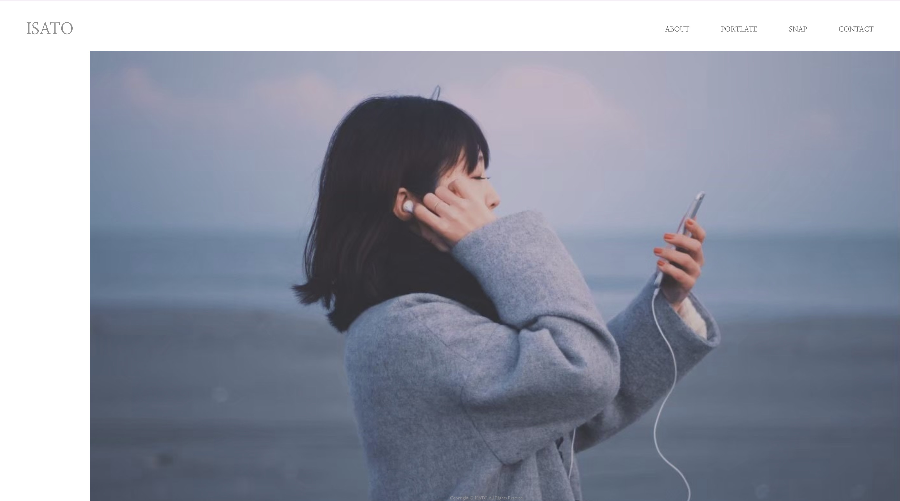
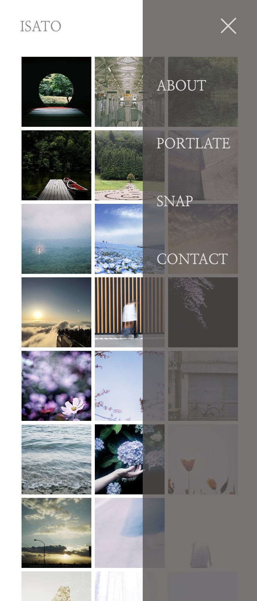

チェックしてみる （こちらをクリック）
- 概要
-
初めはこちらのサイトをポートフォリオサイトとして使用するつもりでしたが、worksの構成が見づらいなと思い、急遽変更しました。
趣味のカメラでたまにお仕事をいただいたりしていることと、『WeAWA』というクリエーターチームを組んでいるので、いづれはそのサイトに使用できたらいいなと考えています。 - 目的／意図
- ポートフォリオサイト制作 Episode 0
- 使用ツール
- Ps Ai VSCode Figma
- 使用言語
- JavaScript JQuery HTML CSS
- 制作期間
- １ヶ月程度
- デザインの意思入れ
-
趣味でもあるカメラで撮影したものを自身のギャラリーサイト内で閲覧できたらいいなと考えて制作してみました。
オープニングのサインは好きなフォトグラファーである”吉田ナギ”さんのポートフォリオサイトを参考にしています。 余白を持たせたり、全ページにオープニングを挟むことでリッチなテイストになるように意識しています。
ギャラリーページに関してはポートレートとスナップの２種類に分けて、それぞれのページを設けることでUXの向上を意識してみました。


